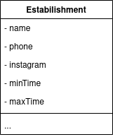
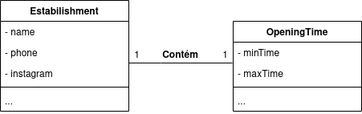

GRASPs
Os padrões GRASP fornecem uma abordagem
sistemática para a atribuição de responsabilidades às
classes do projeto e englobam uma série de princípios baseados na Orientação a Objetos. Seu termo vem do inglês e significa General Responsibility Assignment Software Patterns.
Dentre os tipos de GRASPs, temos :
- Criador;
- Especialista;
- Alta Coesão;
- Baixo Acoplamento;
- Controladora;
- Polimorfismo;
- Invenção pura;
- Variações protegidas.
Criador
Este princípio determina qual classe deve ser responsável pela criação certos objetos ou instâncias.
Para definir criadores, é importantes responder à problemática de quem deve ser responsável por criar uma nova instância de uma determinada classe. Para responder isso, existem algumas indagações a serem levandas em consideração, assim, deve-se atribir a uma classe B a responsabilidade de criar uma instância de A se pelo menos uma dessas condições é verdadeira : - B contém ou agrega A; - B registra a existência de A; - B usa A; - B tem os dados necessários para a inicialização de A que serão passados ao construtor de A.
Caso nenhuma dessas condições seja atendida, a própria classe é responsável por "se criar" ou por criar uma nova instância dela mesma.
Aplicação no projeto
A versão 1 do diagrama de classes, mais especificamente a classe Estabilishment apresenta um baixo nível de coesão, com muitas responsabilidades de forma não especializada. Segue abaixo uma versão reduzida da mesma classe:

OpeningTime
Os atributos minTime e maxTime representam respectivamente o horário de abertura e fechamento do estabelecimento. Estes atributos podem ser separados em outra classe, assim como seus respectivos métodos (getMinTime(), ou getMaxTime() por exemplo). Um exemplo conceitual dessa separação pode ser visto abaixo:

A palavra contém indica um forte relacionamento entre as classes. Uma vez que o horário de funcionamento de um estabelecimento só faz sentido existir se o seu respectivo estabelecimento existe. Essa relação é uma composição, criando as seguintes classes:

Em suma, a classe Estabilishment é a responsável por criar uma instância da classe OpeningTime. Essa separação também aumenta a coesão da classe.
ContactData [escopo aumentado]
No caso da classe ContactData os atributos que definem os dados de contato da classe Estabilishment foram separados de modo a dividir suas respectivas responsabilidades. As classes Phone e SocialNetwork são responsáveis por armazenar as informações de telefone e redes sociais, respectivamente, com o objetivo de intermediar a coleta de dados, e atrinuíndo à classe ContactData a responsabilidade de armazenar e tratar os contatos dos estabelecimentos. Ao distribuir essa responsabilidade, a Estabilishment fica responsável apenas por armazenar os dados de contato compilados.

Especialista
Este princípio determina quando devemos delegar a responsabilidade para um outro objeto que seja especialista naquele domínio.
A problemática envolvida está relacionada à necessidade de um princípio para a atribuição de responsabilidade a objetos, onde escolhas são necessárias durante um projeto para a atribuição de responsabilidades a classes.
Como solução, atribui-se uma responsabilidade a uma classe que possui a informação necessária para cumpri-la, devendo-se deixar bem claro qual é essa responsabilidade.
Aplicação no Projeto
Ainda utilizando o exemplo das classes Estabilishment e OpeningTime (agora com alguns seus métodos):

A responsabilidade de guardar os dados dos horários de abertura e fechamento, assim como de retornar eles está na classe OpeningTime. Essas responsabilidades são a especialidade da classe, o que aumenta a coesão do sistema.
V2 [escopo aumentado]
No escopo aumentado, a responsabilidade da OpeningTime foi dividida com a nova OpeningDay de forma que os dias da semana podessem ser tratados de forma independente (considerando que o estabelecimento feche mais cedo em algum dia da semana, ou não abra em outro). Dessa forma cabe à OpeningTime apenas compilar e tratar esses dados, onde serão armazenados na Estabilishment.

Controlador
Este princípio atribui a responsabilidade por lidar com eventos do sistema a uma classe que não esteja relacionada a interface com o usuário.
Ele surge da problemática de quem deve ser o responsável por lidar com um evento que ocorre na interface de usuáro (UI).
Para resolver isso, deve-se atribuir a responsabilidade de receber ou lidar com um evento do sistema a uma classe que representa todo o sistema, a um sub-sistema e a um cenário de caso de uso.
É interessante também seguir alguns princípios para a elaboração desse modelo, como não conectar objetos da UI com objetos não pertecentes da UI e não aplicar métodos lógicos, como algum tipo de cálculo, aos métodos de um objeto da UI, a fim de modularizar o desenvolvimento das camadas de apresentação e negócio e minimmizar, na camada de negócio, as alterações nos requisitos da UI.
Aplicação no Projeto
Para este exemplo, consideraremos a primeira história de usuário, que diz respeito a visualização do feed de estabelecimentos.
Considerando uma controladora apenas para este caso de uso, a FeedController é responsável por passar a requisição do feed para outros módulos ou classes mais especializadas.
O exemplo abaixo mostra um diagrama conceitual de quais componentes participariam do processamento da requisição:

Para melhor entendimento da ordem de execução, segue um diagrama de sequência para este caso:

Este é um caso básico onde a classe FeedController apenas processa uma requisição. Entretanto, caso sejam adicionadas mais requisições relacionadas ao feed, esta controladora manteria a responsabilidade de direcionar o processamento à classe correta.
Polimorfismo
No Polimorfismo as operações polimóficas devem ser utilizadas sobrepondo o conceito de decisão. Nessa abordagem uma classe principal pode ser utilizada como base, definindo as características básicas do que seus derivados devem ser, ou seja, uma classe Animal pode definir um método emitirSom() e permitir que as classes derivadas: Gato, Cachorro e Galinha executem o mesmo comportamento e ao mesmo tempo possuam características próprias. Exemplo:

Aplicação no Projeto
No caso da nossa aplicação, a tarefa de Registrar Entidades foi padronizada, de forma que a Register fosse responsável por definir um CRUD principal, onde as classes derivadas pudessem executar o registro de acordo com o tipo de necessidade específica, no caso UserRegister, EstabilishmentRegister e ServiceRegister. Essa aplicação faz com que as classes User, Estabilishment e Service não precisem se preocupar com criar um novo registro, apenas armazenar os mesmos.

Alta Coesão
Alta coesão é um padrão avaliativo que tenta manter os objetos adequadamente focados, gerenciáveis e compreensíveis. Um elemento com alta coesão tem suas responsabilidades fortemente relacionadas e altamente focadas. Alternativamente, um elemento com baixa coesão tem muitas responsabilidades distintas, não relacionadas, logo pouco focados. Quanto maior a coesão, maior a facilidade de entender, modificar, reutilizar e manter.
Baixo Acoplamento
Acoplamento é uma medida de quão forte um elemento está conectado, tem conhecimento ou depende de outros elementos. O baixo acoplamento é um padrão de avaliação que determina como atribuir responsabilidades de suporte, como diminuir dependência entre as classes, diminuir o impacto em outras classes ao fazer modificações e aumentar o potencial de reutilização.
Indireção
O padrão de indireção suporta baixo acoplamento entre dois elementos, atribuindo a um objeto intermediário a responsabilidade de ser um mediador entre eles. Um componente controller no padrão Model-View-Controller ou MVC, serve de exemplo neste caso, uma vez que a responsabilidade dele é separar a camada de interação com o usuário da camada que cuida da lógica de negócios e dos dados.
Versionamento
| Autor(es) | Data | Versão | Descrição |
|---|---|---|---|
| Wagner Martins | 24/03/21 | 0.1 | Criação do documento |
| Wagner Martins | 24/03/21 | 0.2 | Adição de exemplos de aplicações no projeto para os GRASPs criador, especialista e controlador |
| Nícalo Ribeiro | 26/03/21 | 0.3 | Adição da definição de alguns conceitos |
| Nícalo Ribeiro | 26/03/21 | 0.4 | Adição da definição de controlador e complementação de especialista |
| Hugo Aragão | 07/04/21 | 0.5 | Adição da classe ContactData |
| Hugo Aragão | 07/04/21 | 0.6 | Adição da classe OpeningTime do escopo aumentado |
| Hugo, Wagner, Nícalo | 07/04/21 | 0.7 | Adição do conceito Polimorfismo |
| Hugo, Wagner, Nícalo | 08/04/21 | 0.8 | Adição dos conceitos de Alta Coesão, Baixo Acoplamento e Indireção |
Referências
[1] Slides das aulas, disponível no moodle da disciplina.
[2] Site: GRASP (padrão orientado a objetos). Disponível em https://pt.wikipedia.org/wiki/GRASP_(padr%C3%A3o_orientado_a_objetos). Acesso: 05/04/21
[3] Site: RDD – Responsibility Driven Design e GRASP – General Responsibility Assignment Software Principles. Disponível em http://nelsonbassetto.com/blog/tags/grasp/